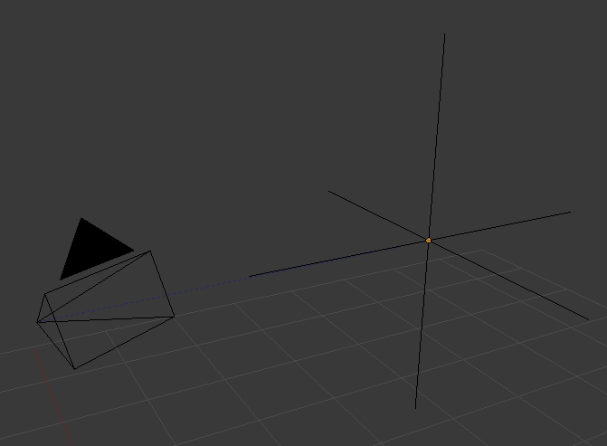

空物体¶
“空物体”是一个没有附加任何几何体的单个坐标点。因为空物体没有体积和曲面，所以无法渲染。尽管如此，它却有可以用作许多用途的手柄。
Editing 编辑¶
只能在 物体模式 中编辑空物体，其中包括其变换和父子属性。
- Apply Scale
Ctrl-A - 虽然空物体完全没有附加任何物体数据到其上的，可用于支持“真实”应用缩放（即非均匀缩放），它们具有显示的大小值，用于控制空物体显示的大小（缩放之前）。这可以通过在最大尺寸的轴上获取缩放因子，并将其与现有的空物体显示大小相结合，以在该轴上保持正确的尺寸。
Properties 属性¶

空物体的显示类型。
- Display 显示
- Plain Axes 纯轴
- 显示为六行，分别指向+ X，-X，+ Y，-Y，+ Z和-Z轴方向。
- Arrows 箭头
- 显示（绘制）为箭头，最初指向X，Y和Z轴正的方向，每个都有一个标签。
- Single Arrow 单向箭头
- 显示（绘制)为单箭头，最初指向Z轴正方向。
- Circle 圆形
- 在XZ平面上最初显示为一个圆圈。
- Cube 立方体
- 显示（绘制）为立方体，最初与XYZ轴对齐。
- Sphere 球形
- 显示（绘制）为由三个圆圈定义的球体。最初，圆圈分别与X，Y和Z轴对齐。
- Cone 锥形
- 显示（绘制）为锥体，最初指向Y轴正方向。
- 图像
空物体可以显示图像。 这可以用于创建参考图像，包括从其中建模的蓝图或角色表，而不是使用背景图像。无论3D显示模式如何，都会显示图像。设置与背景图像设置（ Background Image Settings）内容相同。`
Note
虽然可以使用alpha图像，但是有一个已知的物体绘制顺序的限制，其中当未选择时，alphas不会总是显示（绘制）在其他物体之上。
- 尺寸
- 控制空物体可视化的大小。这不会改变它的缩放，而是作为一个偏移量起作用。
用法¶
空物体可以用作变换手柄。使用这些方法的一些例子包括：
Parent object for a group of objects 一组物体的父级
空物体可以是任何数量的其他物体的父级。这使得用户能够容易地控制一组物体，并且不影响渲染。
Target for constraints 目标约束
空物体的也可以用作正常的目标，或骨骼约束。这给了用户更多的控制权; 例如，可以容易地设置绑定以使照相机能够使用 标准跟随（Track to） 约束指向空物体。
Array offset 阵列偏移
可以使用空物体的方法来偏移阵列修改器，这意味着只需移动单个物体就可以实现复杂的变形。

用于控制阵列的空物体示例。 |

空物体控制标准跟随（Track to）约束示例。 |
{kind=link}
其他常见用途：
- 占位符
- 绑定控制
- 景深(DOF)距离
- 参考图片